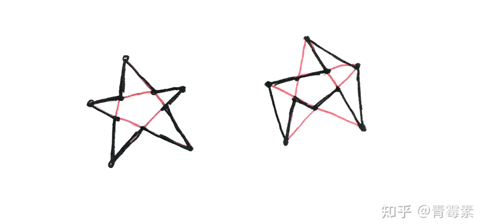

摘要：
点云预处理；二维外轮廓探测；凹多边形顶点排序（失败）；多边形填充。
请看VCR。
要点记录
1、数据读取功能有个优化项，具体可以搜索下“C++ 按字节读取文件”，如果按字节位存储、读取文件，那在速度和占用大小上都比用txt这种明文格式好很多。
2、预处理分两个部分：
（1）几何中心归零，平移点云使它的几何中心与坐标系原点重合；
（2）点云底部填充，补充点云底部信息。原PolyFit方法中需要额外提供一份表示底部轮廓的多边形数据，尽量优化掉这步操作。
3、二维外轮廓探测步骤（思路：平行光+旋转，感谢同门提供）：
（1）包围盒中间到底部的点投影到水平面上；
（2）二维格网下采样，格网中心为抽稀点；
（3）外轮廓探测：点按x值由小到大排序，记录y值最大、最小的点；按一定角度旋转后重复该过程，记录点为外轮廓点云。
（4）每个格网中心取原始点云的最近点。
4、轮廓点排序：
难点：建筑物底部轮廓是凹多边形，凹多边形的顶点能以多种不同的连线方式来构成多边形。一个生动的例子是五芒星的包络方式有多种，[12]。

思路：极角排序，要求原点位于理想的多边形内部。
程序中先取最左侧点及其相邻的两个点，以这三个点构成的三角形重心来作为原点。
显然这种方法只适用于部分凹多边形，原点与外轮廓点点集之间相对角度将影响到最终的点排序。我所了解到的其他方案（如德劳内三角网）中，也不能普遍适用所有情况（摊手.jpg）。
5、多边形内部填充：
根据包围盒范围按间隔生成点，再用射线法判断点是否在多边形内。
6、点云底部填充部分的代码复杂化了，效果也不太完美。
更简便快捷的思路：把整个点云投影到底部，再按格网抽稀即可。这种做法除了有可能多填充一层表示屋檐的外圈点外无明显缺点，几乎不影响后续的流程。
参考文献&引用
[1] https://3d.bk.tudelft.nl/liangliang/
[2] https://3d.bk.tudelft.nl/liangliang/publications/2017/polyfit/polyfit.html
[3] https://www.youtube.com/watch?v=_0brfDFkIkc
[4] Linfu X ,Han H ,Qing Z , et al. Combined Rule-Based and Hypothesis-Based Method for Building Model Reconstruction from Photogrammetric Point Clouds [J]. Remote Sensing, 2021, 13 (6): 1107-1107.
[5] Nan L , Wonka P .PolyFit: Polygonal Surface Reconstruction from Point Clouds[C]//International Conference on Computer Vision.IEEE, 2017.
[6] https://github.com/Kitware/CMake/releases/download/v3.29.3/cmake-3.29.3-windows-x86_64.zip
[7] https://boostorg.jfrog.io/artifactory/main/release/1.85.0/source/boost_1_85_0.7z
[8] https://github.com/CGAL/cgal/releases/download/v5.6.1/CGAL-5.6.1.zip
[9] https://gitlab.com/libeigen/eigen/-/archive/3.4.0/eigen-3.4.0.zip
[10] https://scipopt.org/download.php?fname=SCIPOptSuite-9.0.0-win64-VS15.exe
[11] https://zenodo.org/records/4390295#.Y0eIodJBxuV
[12] https://www.zhihu.com/question/277599635/answer/2149719454
[13] https://zhuanlan.zhihu.com/p/668272208